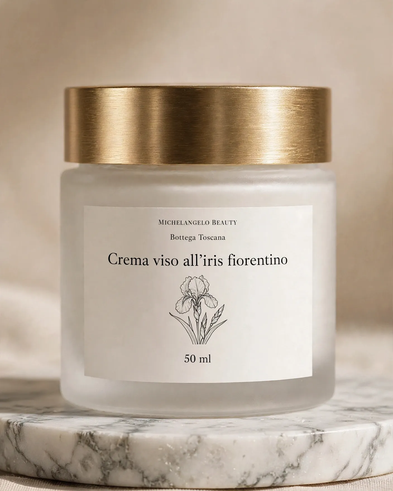
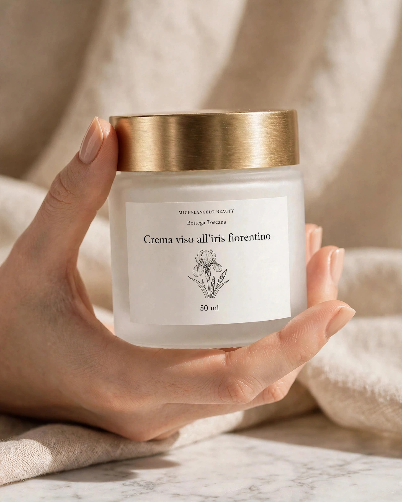
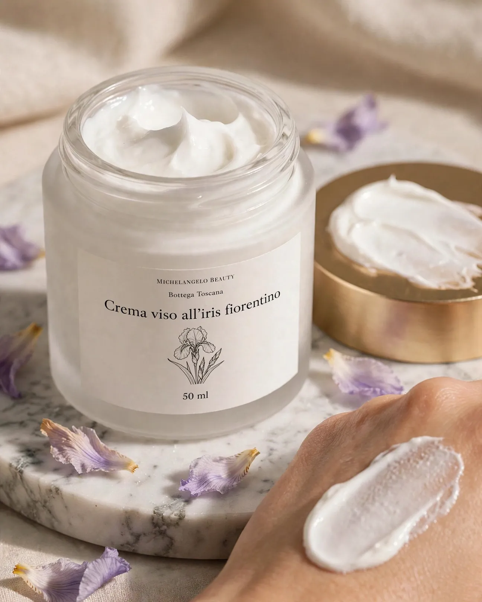

Opera n. IIViso



Viso Opera n. I
Crema viso all'iris fiorentino
Una crema morbida con estratto di radice di iris, il giaggiolo delle colline fiorentine. Idrata e lascia la pelle vellutata.
28,00 € 50 ml · IVA inclusa · 560,00 €/l
1
- Spedizione 4,90 € · gratuita da 49 €
- Arriva in 2-4 giorni lavorativi con la spedizione standard
- Confezione regalo con biglietto scritto a mano (+3 €): la scegli nel carrello
- Reso entro 14 giorni dalla consegna · come funziona
Scheda dell'opera
- Opera
- n. I · linea Viso
- Materiali
- Iris fiorentino del Chianti, olio d'oliva, burro di karité
- Tecnica
- Emulsione a caldo, lotti da 60 vasetti
- Formato
- 50 ml · PAO 6M
- Lotto
- MB-26-118 (lotto in vendita ora)
- Origine
- 98% di ingredienti di origine naturale (ISO 16128)
Descrizione
La radice di iris riposa tre anni prima di essere lavorata: per questo in Toscana la chiamano "l'oro viola". La uniamo a olio extravergine d'oliva, burro di karité e squalano vegetale in una crema che si assorbe in fretta e non lascia la pelle lucida. Pensata per pelli secche o sensibili. Non è profumata: il leggero sentore è quello dell'iris.
Come si usa
Mattina e sera, su viso e collo detersi. Ne basta quanto un pisello: stendila dal centro del viso verso l'esterno. Al mattino aspetta un minuto prima del trucco.
Ingredienti tocca una parola
Elenco in ordine decrescente di quantità. 98% di ingredienti di origine naturale, calcolato secondo la norma ISO 16128.
Conservazione e PAO
Vasetto in vetro satinato. Conserva sotto i 25 °C, al riparo da luce e calore, e preleva con mani pulite o con la spatolina.
PAO 6M: usalo entro sei mesi dalla prima apertura.
Persona responsabile
Michelangelo Beauty Bottega s.n.c., Via della Bottega 0, 55000 Colline Apuane (LU), P.IVA 00000000000, bottega@michelangelobeauty.example, tel. 000 000 0000 (dati di fantasia).
Domande
Va bene per la pelle grassa?
È leggera, ma la formula è pensata per pelli secche e sensibili. Per una pelle mista o grassa di solito basta il siero alle vinacce, la sera.
Posso usarla sul contorno occhi?
Sì, picchiettandone pochissima con l'anulare, senza arrivare alla rima degli occhi.
Si abbina con
Opera n. VMani e labbra
Opera n. VIISaponi